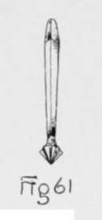
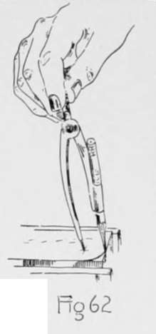
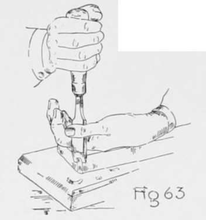
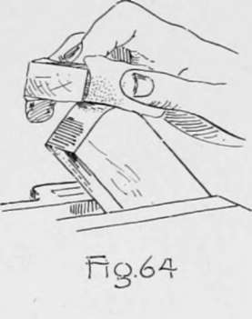

Chapter VII. Chiseling And Planing
Description
This section is from the book "Beginning Woodwork At Home And In School", by Clinton Sheldon Van Deusen. Also available from Amazon: Beginning Woodwork At Home And In School.
Chapter VII. Chiseling And Planing
In this chapter, work of a different kind is done with the chisel and, in addition, good experience is gained in planing a C5'linder and in fastening pieces together.
Towel Roller
The material required is three pieces of cypress-one for the back 19 1/4"x 3 3/8"x 5/8". one for the ends 7"x2"xl", one for the roller 18 3/4"x l 1/2"x l 1/2 -four 1" No. 10 flat-head, bright screws, and two 1 1/2" No. 1" flat-head bright, screws. The tools to be used for the first time are the compass, countersink and screwdriver.

Towel Roller.
(a) Plane the piece for the back by the rules for planing, Chapter IV, a to o, to dimensions (17, 18, 15).
(b) To locate the holes for the screws, place the try-square on the piece, with the beam against the joint side and the blade on the side opposite the working face. Using the rule as in Fig. 29, move the try-square to such a position that its edge shall be 7/16" from the end and draw two short knife lines about from each side. Set the gage to 5/8" and gage from the joint side and from the side opposite, making short gage lines crossing the short knife lines. In the same way make two knife and gage lines for the two holes at the other end of the piece. In a similar manner locate the holes for fastening the towel roller to the wall, 1 3/8" from each end and 1 1/2" from the joint side.
(c) Place the 3/16" auger-bit in the brace and bore six holes through the piece at the points indicated by the cross lines.
(d) Place the countersink (Fig. 61) in the brace and countersink the. two holes at each end on the side opposite the working face and the other two on the working face until, when one of the screws is placed in a hole, the top of the head is slightly below the surface.
(e) Plane the piece for the ends, by the rules for planing, to width (19) and thickness (20), and block-plane each end square as in Chapter IV, m. Measure from each of these ends the length of the end piece (18) and make a knife line square around the piece at each of these points.
(f) Using very light lines, locate on the side opposite the working face two points as centers of the quarter circles, each point to be 5/8" from the side opposite the joint side and 5/8" from each end, using the same method that was used in b. Set the pencil compass to 5/8" and draw quarter-circles using as centers the points where the knife and gage lines intersect (Fig. 62).
(g) Place the piece flat on a chiseling board' with the working face down and the corner to be rounded, away from you. Hold the piece in this position by resting the back of the left hand on the piece; then take the larger chisel in the right hand so that the little finger is at the end of the handle nearer the blade (Fig. 63). Take a thin cut off the corner by pushing the chisel down in a vertical direction, the blade being held between the thumb and first finger of the left hand. By pinching the thumb and finger together they will aid in controlling the cuts of the chisel. Continue this chiseling until the surface is tangent to the quarter-circle; that is, until it touches it in one point. Before this chiseling is completed, the surface should be tested to see if it is coming square with the working face. It is also desirable that this surface should make equal angles with the end of the piece and the side opposite the joint side.. Two parallel vertical edges are formed by this chiseling. These edges should be chiseled off in the same manner as above until two surfaces are formed in place of the two edges; these surfaces should be tangent to the quarter-circle. If the work has been carefully done there will be three equal-width surfaces and four parallel vertical edges. In a similar manner continue the chiseling until four very narrow surfaces have been made tangent to the quarter circle in place of the four edges. There will then be seven equal-width surfaces. This will probably be as far as this process can be continued, but it should be carried further if an edge can be replaced by a suface narrower than those just made. Clamp the piece in the vise (Fig. 64), and with a piece of No. 1/2 sandpaper wrapped around a small block, rub the rounded surfaces until they are smooth and the grain of the wood has a clear appearance.
'If no chiseling board has been provided, the practice piece used in Chapter II will do very well for a substitute.
(h) By the same method as used in b, locate on the working face of this piece two points each 1 1/2" from each end and 7/8" from the joint side.
(i) At the points located in h, bore with the 11/16" auger-bit until the lips (Fig. 19) of the bit are just ready to raise a chip. Then with the rule measure the distance from the surface of the piece to the chuck of the brace (Fig. 65). Now bore until the distance from the surface to the chuck is 7/16" less than when first measured. This indicates that the bit has bored that distance.
(j) Set the gage to the distance that the nearer side of the hole in the part that is to be the right end piece is from the joint side, and gage from the hole to the nearer end of the piece. Continue this gage line about half-way across the end, keeping the gage-block against the joint side. Now change the set of the gage to the distance the farther side of the hole is from the joint side, and gage as before to the end of the piece and about half-way across the end. Set the gage to the same distance (21) as the depth of the hole and with the gage-block against the working face, gage a line between the two lines that were gaged half-way across the end.
Continue to: